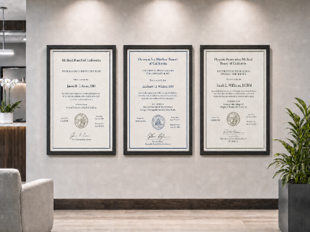

The Restorative Physician Who Might Have Been
An Adventist historical thought experiment on Hygienic-Restorative Medicine, the profession that never took shape.

Three framed credentials hang in the lobby: MD, DO, and DHRM. The patient had asked specifically for a restorative physician, had waited three weeks for this appointment, and was glad to be here.
Looking at the chart, Sarah L. Williams, DHRM, reads: type 2 diabetes, newly diagnosed. She knows exactly what to do, just as any of her MD or DO colleagues would: ask for history, perform examination, laboratory review, kidney function, cardiovascular risk, eye and foot care, medication review, and assessment of whether immediate pharmacologic treatment is needed.
But she does not stop there.
She then asks, patiently and with care, about what the patient eats for breakfast and when the last meal is taken. Who buys the food? Who cooks? Is there a kitchen? Is there money for produce? Does pain limit walking? Is the patient sleeping? Is there shift work? Is there loneliness? Are there sweet drinks? Is the family ready to change, or will the patient be sent home to fight the pantry alone?
She had already brought the case before God: there were questions no examination could reach. Only He could inspire her to ask the right questions to get the missing details.
At this point she might prescribe some medication to blunt the immediate glycemic picture. But she would not allow such to masquerade as the cure. She was trained better than that.
She tells the patient, “This medicine can protect you while we turn the ship. But the disease pattern is being fed every day. If we do not change what feeds it, we have not treated the cause. We will measure carefully. If your body responds, we will reduce what we can. If it does not respond, we will not pretend that lifestyle is working merely because we prefer it.”
She prays with the patient—not as a procedure, but because she genuinely does not know what this patient will do when they go home, and she knows Someone who can turn the heart and the life far better than mere advice. Then she prescribes time for observation to make sure the most egregious issues are in remission before recommending admittance at the local sanitarium to help the patient learn the longer work of rebuilding health.
Sarah the physician does not exist.
The credential beside the MD and DO on the clinic wall—Doctor of Hygienic-Restorative Medicine, DHRM—has never been issued. This is a counterfactual, a line of reasoning that explores what could have happened if events had unfolded differently, but not a fantasy. Its raw material is historical, drawn from Ellen G. White—an Adventist author whose writings on health, education, and medical work shaped the Adventist vision of healing—alongside the sanitarium ideal, the Adventist union of education and practical labor, the early health reform movement, and the moment in American history when the medical field was forced to define itself.
In this alternate history, Adventist medicine does not become simply a denominational version of our everyday practice. Nor does it retreat into informal health reform outside the licensed professions. Instead, it matures into a recognized branch, rigorous enough to survive public scrutiny and distinct enough to preserve its own philosophy of healing. The difference would not be a lighter education. It would be a different center.
A narrow door in American medicine
American medicine was not always the settled hierarchy we now know.
In the nineteenth and early twentieth centuries, the medical landscape included allopaths, homeopaths, eclectics, osteopaths, proprietary medical schools, hydropathic institutions, religious healing work, sanitariums, and reform movements of uneven quality. Some were serious. Some were dangerous. Many were inconsistent. Some just labeled themselves “doctor” with little to no training at all. The public had good reason to want higher standards.
The professionalization of medicine brought enormous gains. Laboratory science mattered. Clinical training mattered. Licensing mattered. Surgery, anesthesia, bacteriology, obstetrics, sanitation, imaging, antibiotics, and emergency care would save lives on a scale earlier generations could scarcely have imagined. Those gains were real.
But professionalization also narrowed the field. Healing practices that could not discipline themselves either vanished, became marginal, or conformed. The Flexner Report of 1910 formalized that narrowing: schools that could not demonstrate clinical and scientific rigor closed, and traditions that had not organized into credible institutions largely disappeared. Osteopathy offers one example: it endured not merely as a set of ideas, but as an organized profession—with schools, standards, clinical training, and legal recognition—even as its practice gradually drew nearer to allopathic medicine.
What if Adventist medical work had reached that moment already coherent, decentralized, scientifically literate, clinically competent, spiritually faithful, and institutionally mature?
What if it had been strong enough to define itself—not as a protest, not as a sectarian imitation of medicine, and not as an informal reform movement, but as a genuine branch?
In that alternate world, the public-facing name might have been Hygienic-Restorative Medicine. “Hygienic” would have carried the older meaning of hygiene: the ordered conditions of life—air, water, food, cleanliness, rest, exercise, sunlight, temperance, sanitation, and obedience to physiological law. “Restorative” would have named the aim: not merely relief of symptoms, but the recovery of function, order, agency, and wholeness.
The degree would be DHRM.
The work would be restorative medicine.
The practitioner would be a restorative physician.
What it would not be
Our existing categories of medical practitioners make it hard to see this clearly. It would not be alternative medicine in the eclectic sense—no gathering of therapies for being old, natural, or foreign; no practice organized around supplements, boutique testing, and suspicion of modern medical care. It would not be naturopathy under another name, functional medicine with Sabbath observance, or lifestyle medicine with stronger religious roots.
It would be a branch of medicine organized around a doctrine of healing: that the body was created under law; that disease is often related to violated physiological law, though not always by personal fault; that the physician should teach the patient to cooperate with the body’s restorative powers; that simple physiologic remedies should be used intelligently; and that drugs and procedures should serve restoration rather than replace it.
This distinction is necessary because two caricatures are always nearby. One imagines the restorative physician as an undertrained reformer who avoids modern medicine out of fear. The other imagines an ordinary physician who leaves the therapeutic model untouched and adds Adventist language around the edges. Neither is accurate.
The word law in that doctrine is not legal metaphor. It names something more concrete: the physiological conditions built into the body by its Maker—the requirements for air, water, food, rest, sunlight, exercise, cleanliness, and moderation. In the framework that shaped this vision, those conditions were not arbitrary biological facts. They were the designed order of creation, inseparable from the One who designed them. To violate them was not merely to generate pathology. It was to move against the grain of the body’s own design—which is why “violated physiological law” in this tradition carries a moral weight that “unhealthy behavior” does not. The restorative physician’s task would not be merely to correct habits, it would be to restore order.
Any Adventist account of medicine must also reckon with Ellen White’s strong warnings about drug medication. Those statements belong partly to a nineteenth-century world of toxic, heroic, poorly tested treatments. But they cannot be dismissed merely as historical embarrassment. They express a principle: the physician must not poison, stupefy, suppress, or create dependence when the true work is to remove causes and restore the body’s own powers.
A restorative physician would therefore be minimalist with drugs, but not careless with life. The guiding question would not be, “How do we avoid modern medicine?” It would be, “What is the least harmful, most restorative care this patient needs now?” Sometimes the answer would be food, water, rest, sunlight, instruction, and time. Sometimes it would be the operating room.
The physician formed by a different center
Hygienic-Restorative Medicine would have needed the ordinary sciences of medicine. No branch could have survived serious licensure while being casual about anatomy, pathology, microbiology, diagnosis, surgery, obstetrics, emergency care, or drugs. The restorative physician would have needed to know when the patient required insulin, antibiotics, imaging, anesthesia, psychiatric stabilization, or an operating room.
But the same knowledge can serve different governing aims.
At the center of this was a conviction now easy to admire but difficult to institutionalize: the physician is an educator. The restorative physician would teach because God made the body under law and intends the patient to understand and cooperate with that law—not because patient education is a sound clinical philosophy. A secular clinician can reach the same pedagogical conviction by different roads. The physician who walks daily with God reaches it because they follow the One who made the body.
That does not mean every appointment becomes a lecture. It means the clinician asks a larger set of questions: What produced this condition? What sustains it? What does the patient understand? What habits must be rebuilt? Where is the patient discouraged, deceived, trapped, or afraid? What can be restored, and what must simply be borne with tenderness?
Such a physician would not ask only, “What treatment matches this disease?” The deeper question would be, “What has broken order in this life, and what can be restored?” That question has its limits. In a crisis—sepsis, trauma, appendicitis, ectopic pregnancy, diabetic ketoacidosis, stroke, myocardial infarction, obstructed labor—the first task is to preserve life, not investigate its conditions. These are not moments for romantic talk about sunshine and temperance.
A restorative physician would not deny that—but much of modern illness does not begin in the emergency department. Type 2 diabetes, hypertension, obesity, fatty liver disease, preventable cardiovascular disease, constipation, insomnia, addiction, anxiety, depression, and many pain syndromes often grow slowly from the conditions of ordinary life. They are fed by food, sleep, work, loneliness, stimulants, inactivity, stress, poverty, grief, and habit.
The restorative physician would be trained to see those as medical facts, not as soft concerns. Not as the paragraph at the end of the visit. Not as “lifestyle” in the trivial, optional sense. As causes, contributors, and therapeutic targets.
The harder question is, “Why is the body producing this pattern, and how much of the cause can actually be removed?”
The restorative physician would need to manage the crisis, but also the long rebuilding after the crisis.
Pharmacology, for example, would not be ignored. It would be studied carefully, because drugs are powerful and sometimes necessary. But they would be taught as interventions in physiology, not substitutes for reform. The student would be trained to ask: What does this medication do? What danger does it prevent, and what harm might it introduce? Is it treating a cause, or buying time until something more fundamental can change?
The training would also carry an expectation no syllabus could fully capture. Prayer would not be a chapel requirement, satisfied at morning devotions and then set aside while the real work began. Students would be expected to bring specific cases before God—the unclear diagnosis, the patient who would not comply, the home situation no examination could reach. The school would understand that kind of daily asking as part of what it meant to practice medicine faithfully.
Beneath all of this—the sciences, the pharmacology, the prayer—the curriculum would be ordered by Scripture: not as a narrow religious requirement, not as a substitute for scientific competence, but as the text that gives all other learning its moral and redemptive frame. That deserves more than a passing acknowledgment. The school would not merely include Bible classes. It would be built around the Bible as the governing textbook of the whole school.
That statement can be misunderstood. It does not mean physiology replaced by proof texts, chemistry taught as devotional metaphor, or professional training softened into pious amateurism. Ellen White’s educational model was too practical for that. She wanted the hand trained, the body strengthened, the mind disciplined, the character formed, and the student prepared for useful service.
But she also insisted that education loses its center when the Bible is pushed to the edge. In her view, Scripture is not one subject among many, useful for chapel and religion course credit but irrelevant to anatomy, agriculture, medicine, economics, or the habits of daily life. It is the Book that tells the truth about God, human nature, sin, redemption, duty, mercy, and the restoration of the divine image in humanity. The prospective physician would study the body as creation, not machinery alone. Disease would be studied as biological fact, but also in relation to law, disorder, suffering, mercy, and restoration.
A lecture on digestion in this school would not just go over enzymes and absorption. It might draw on biblical scenes of appetite, fasting, feasting, provision, temptation, and mercy. It would ask what appetite is, how habit is formed, how poverty shapes food choices, and why self-control cannot be separated from mercy. That is what it meant to treat the Bible not as decoration, but as orientation: to ask what a human being is before asking how a human body functions, to ask what healing is for before asking which intervention works, to ask what appetite, labor, rest, suffering, stewardship, and compassion mean before turning them into clinical techniques.
This would not have made the school less scientific. It would have made its science serve the whole person, not the organism alone.
But the Bible’s position at the center required something more of the student. The Bible stands at the center not only as an intellectual framework but as the living medium through which the Great Physician speaks to students still being formed. Engaging it that way requires something no curriculum can produce: a daily turning toward God. The school could require Scripture study. It could not require the relationship—it could only create the conditions and trust God to do the rest.
The institutions around the physician
A real branch of Hygienic-Restorative Medicine would have required more than individual clinicians. Its hospitals, sanitariums, schools, missions, rural clinics, teaching kitchens, and home-visiting teams would all need to be shaped by the same convictions. But conviction would not be enough. There would need to be boards, peer review, and discipline. Spiritual language does not protect patients from incompetence. In fact, it can make incompetence harder to challenge if a healer learns to confuse criticism with persecution.
The word sanitarium now sounds antique, and for some readers perhaps even suspect. But in the Adventist medical imagination, the sanitarium was not merely a place where sick people were kept. It was meant to be a school of restoration.
A hospital is organized around acute need. A sanitarium, at its best, was organized around the conditions of recovery. Patients were to be treated, but also taught. They were removed, at least briefly, from the conditions that helped produce disease. They were placed in an ordered environment of rest, food, air, water, exercise, instruction, nursing, and spiritual care.
This model could be abused. Any residential system can become paternalistic. Institutional routine can be mistaken for righteousness. The strong can impose on the weak. The wealthy can turn restoration into retreat. The poor can be praised in mission statements while priced out in practice.
Yet the model saw something that modern medicine often struggles to hold: many patients do not need only an intervention. They need a new order of life.
A Hygienic-Restorative system would have needed both hospitals and sanitariums. The hospital would care for emergencies, operations, childbirth, trauma, infection, and complex disease. The sanitarium would address chronic illness, recovery, instruction, and the rebuilding of habits. They were not the same thing—and a system that confused them would eventually lose one or the other. But they would belong together, serving the same person across a single arc of care: the emergency and the rebuilding, the acute intervention and the longer work of restoration.
The conviction that they belonged together was not, on its own, enough to keep them that way. Medical brilliance, institutional ambition, reforming zeal, and religious language can gather too easily around a human center. History supplies examples of gifted healers whose theological authority made clinical accountability feel like an act of faithlessness. A faithful restorative system would require distributed authority, serious accountability, and resistance to celebrity medicine. Among its structural commitments: a standing prohibition on the convergence of theological authority with clinical authority. Where the same figure claimed both, oversight would tighten, not defer.
Institutions drift. Authority concentrates. The forms of accountability can survive long after their substance has been hollowed out. The danger would not disappear because the name changed.
What the branch might have done well
If Hygienic-Restorative Medicine had remained faithful and competent, its greatest strength might have been chronic disease. Modern life produces illnesses that do not yield easily to a prescription-centered model. Much chronic disease is deeply entangled with habits, households, schedules, appetite, work, poverty, loneliness, and hope. The restorative physician would have been trained for that terrain.
Such physicians, if remaining faithful to their own principles, might also have served the poor well. A system centered on instruction, water, air, food, sanitation, walking, rest, nursing, and practical care has tools that do not always require expensive technology. That does not make the work cheap; labor-intensive care has its own cost. But the system would not be helpless without a specialist or a patented molecule.
It might have trained lay workers unusually well. Not everyone can be a physician. Many can learn to cook, visit, teach, nurse, encourage, recognize danger signs, and help a neighbor change.
At its best, the branch would not hoard knowledge.
It would multiply it.
The model’s temptations
The imagined profession should not be romanticized.
Restorative medicine’s teaching that disease is connected with violated physiological law creates a specific trap: the careless physician may assume too quickly that suffering reveals personal fault. That is both false and cruel. People suffer from genetics, infection, injury, abuse, poverty, environmental exposure, ignorance, grief, and the sins of others. Even when habit is involved, tenderness is not optional. The same asymmetry shows up in paternalism—the physician as educator can slide into the physician as governor. Patients end up corrected rather than cared for, managed rather than taught, spiritually pressured rather than invited.
Simplicity has its own danger: it can become an idol. A physician who delays insulin, antibiotics, surgery, transfusion, psychiatric stabilization, or pain control when these are truly needed has not honored the body—they have baptized neglect. Alongside this sits the temptation of weak evidence. Whole-person care is genuinely harder to study; it is easier to run a drug trial than to measure a pattern of food, rest, water, sunlight, family change, and nursing over months. Difficulty is not permission to rely on anecdotes, institutional memory, or a convincing speaker.
The institutional dangers are their own. Health reform can become a brand. Sanitariums can become retreats for the comfortable. Simple remedies can become product lines. The poor become a theme rather than a real operating priority. A branch grounded in Adventist theology also faces a specific pull toward subcultural enclosure—distinguishing universal physiological law from denominational habit requires continuous attention, and when it lapses, the branch becomes unintelligible to the people it was meant to serve.
There is one more temptation, subtler than the others because it wears the face of faithfulness. A restorative institution can preserve every correct principle—cause removal, household instruction, simple remedies, service to the poor—and still dry up. The vocabulary survives. The structure survives. What does not survive, if it goes untended, is the daily relationship with the Great Physician who gave the work its meaning. Ellen White warned of a church preaching law until it was as dry as the hills of Gilboa, where dew and rain no longer fell. The same failure is available to a healing system. Correct form without living communion produces a very sincere imitation of medicine.
And beneath all of these lies the oldest temptation: pride. The moment a healing system begins to congratulate itself for being the faithful alternative, it is already unsafe.
What the counterfactual reveals
The restorative physician does not exist. No licensing board recognizes the DHRM. No patient chooses between an MD, a DO, and a Doctor of Hygienic-Restorative Medicine.
Perhaps such a profession could never have survived. Perhaps reimbursement pressure, malpractice law, scientific specialization, secularization, institutional ambition, and Adventism’s own internal tensions would have bent it beyond recognition. Alternate histories are useful only when they remain humble. History is not clay in our hands.
Still, this road not taken clarifies something. Ellen White’s medical vision was not reducible to vegetarian food, hydrotherapy, hospitals, or missionary language. It was an architecture of healing: practical, educational, spiritual, preventive, institutional, and restorative. It joined the clinic to the school, the school to the home, the home to the church, and the care of the body to the restoration of the whole person before God.
The physician formed by that vision would not have been merely a clinician who believed Adventist doctrines. They would have been a clinician formed by an Adventist doctrine of healing.
That matters not as nostalgia but as a diagnostic. If the fragments belong together—the Bible as governing text, the physician as educator, the institution as a school of health, the patient as a whole person—then their separation is not a neutral historical accident. It is a legible kind of loss. Whether or not DHRM could ever have held them together in licensed practice, the separation is real and the question is:
Have we preserved the ideal clearly enough to be judged by it?
Or the harder question behind it: do we still walk with the One who gave it? An institution can hold the vision with great fidelity and still be practicing from the hills of Gilboa. The vision survives. The companion is gone.